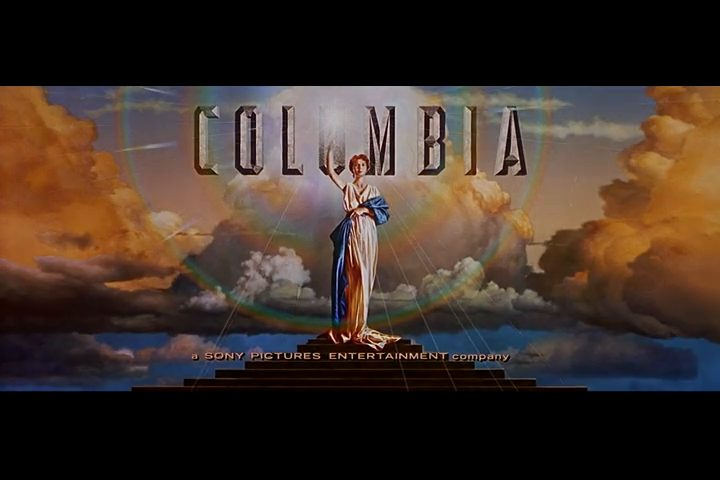
Кадр T1 · 0-8 с
Заставка студии · Статика
Заставка Columbia: дама с факелом, надпись COLUMBIA.
Перевод: «Коламбия Пикчерз… представляет».
♪ Своя музыка заставки Columbia
Мысль ролика: раньше за персоналом шли на поклон к Крёстной, долго и сложно. Сейчас в «Человеках» быстро и просто, в одну кнопку. Около 80 секунд. Часть 1 идёт как старый фильм с кассеты, с гнусавым переводом. Плёнка сгорает, и мы в сегодняшнем дне. Зелёная строка у каждого кадра — музыка. Картинки здесь эскизы.

Заставка Columbia: дама с факелом, надпись COLUMBIA.
Перевод: «Коламбия Пикчерз… представляет».
♪ Своя музыка заставки Columbia
Белый текст на чёрном: «Все персонажи вымышлены. Любые совпадения с реальными людьми, Дедами Морозами и котами случайны».
Перевод читает монотонно.
♪ Тишина, треск плёнки
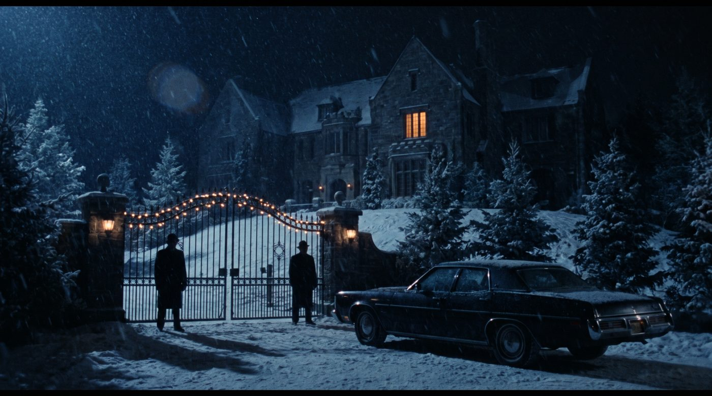
Темнота. Потом вилла ночью под снегом: кованые ворота, охрана в пальто, гирлянды, светится одно окно. Камера едет к окну. Поверх проявляется титр «КРЁСТНАЯ МАТЬ».
Перевод: «Крёстная мать». Слов больше нет, только музыка.
♪ ВАЛЬС из «Крёстного отца» вступает в темноте, громко под виллу
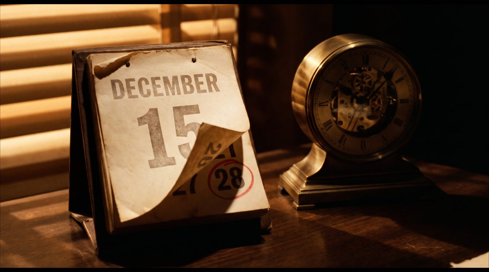
Настольный календарь: «15 декабря». Рядом обведённое красным «28». Тикают часы.
Звук: тиканье.
♪ Вальс тише, под тиканье часов
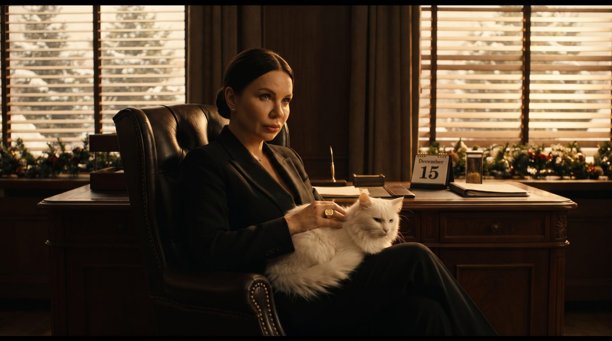
Тёмный кабинет. За жалюзи снег и гирлянды. Настя в высоком кресле, белый кот на коленях. Нижний ракурс: она властвует.
Звук: тиканье, мурлыканье.
♪ Вальс тихо
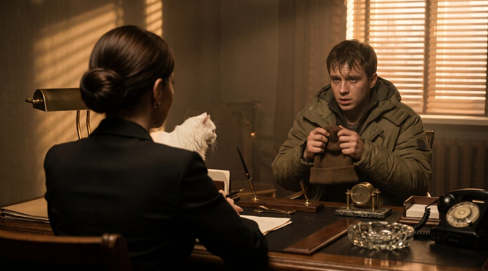
Спиной к нам Настя (пучок, плечи костюма). Напротив менеджер в пуховике мнёт шапку. Верхний ракурс на него: он маленький.
Менеджер: «Крёстная… У меня корпоратив двадцать восьмого. Пятьсот гостей. Мне нужен Дед Мороз».
♪ Вальс почти не слышно, говорит менеджер
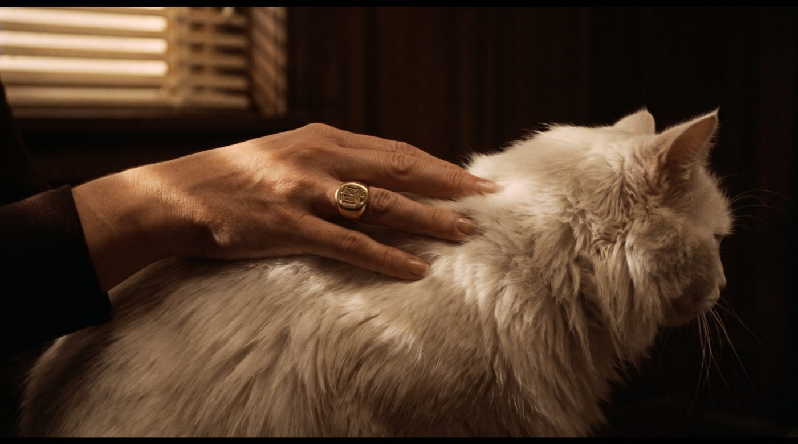
Рука Насти медленно гладит белого кота. Блестит перстень.
Звук: мурлыканье.
♪ Вальс тихо

Настя гладит кота, глаза опущены. Говорит тихо, не глядя на него.
Настя / перевод: «Ты приходишь ко мне пятнадцатого декабря… и просишь Деда Мороза. На самую горячую дату года».
♪ Вальс уходит, остаётся тиканье
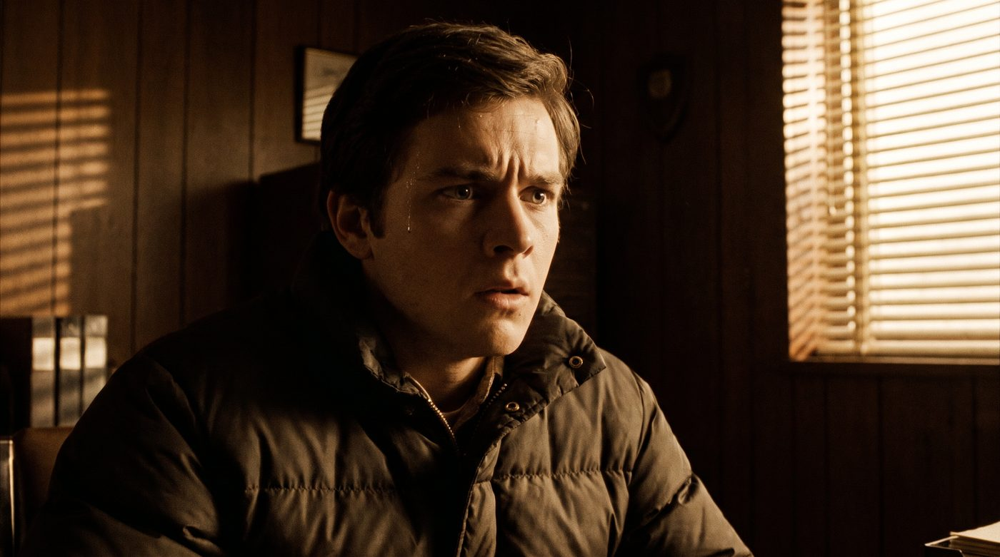
Менеджер сглатывает, по виску течёт капля пота.
Звук: тиканье громче.
♪ Без музыки: тиканье громче, напряжение
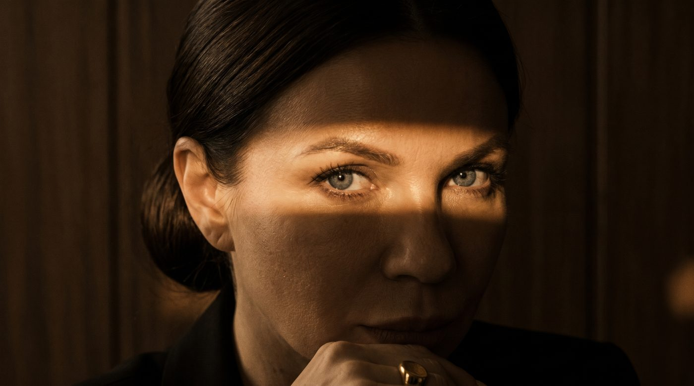
Глаза Насти в полосе света. Медленно поднимает взгляд.
Настя / перевод: «Но ты, сука, делаешь это… без уважения».
♪ Без музыки, пауза
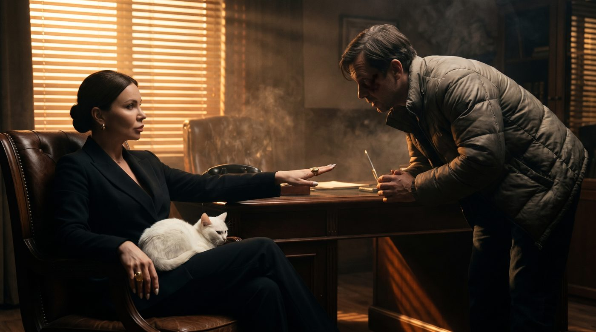
Пауза. Настя протягивает руку тыльной стороной вверх.
Настя / перевод: «Ладно. Я пойду тебе навстречу».
♪ Без музыки
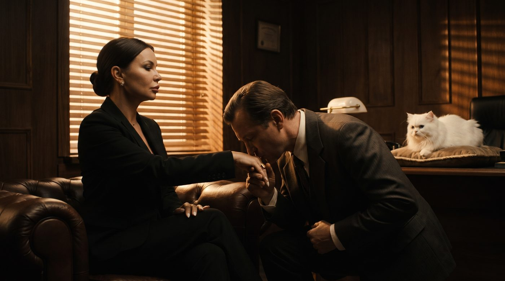
Губы менеджера касаются перстня.
Менеджер / перевод: «Спасибо, Крёстная».
♪ ТЕМА ЛЮБВИ вступает на поцелуе перстня
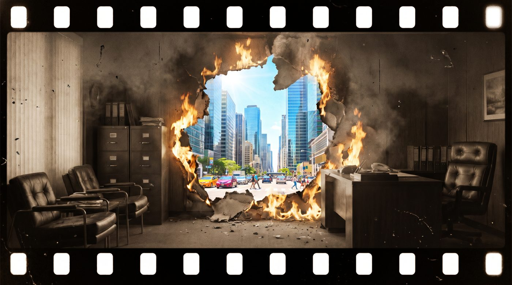
Картинка застывает, плёнка плавится и сгорает. Сквозь дыру бьёт яркий свет.
Титр: «Так было раньше: на поклон к Крёстной». Треск плёнки.
♪ Тема любви обрывается скрипом плёнки
Светлый современный офис с ёлкой. Тот же менеджер в свитере с оленями, спокойный, с кофе.
Титр: «Так стало: Человеки».
♪ ФИНАЛЬНАЯ МУЗЫКА (уточняю у Маши) вступает с яркой картинкой
Менеджер в «Человеках» выбирает «Дед Мороз, 28 декабря» и жмёт одну кнопку. Зелёная галочка «Подтверждено».
Звук: «дзынь». Титр: «Без звонков и поклонов».
♪ Финальная музыка
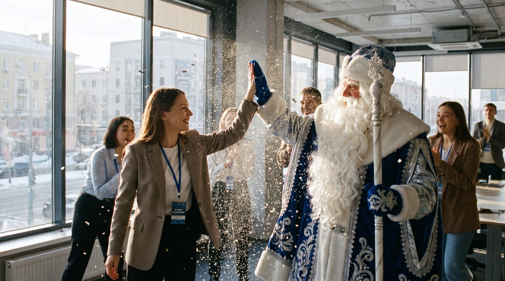
Вихрь снежинок, рядом возникает Дед Мороз, дают пять.
Дед Мороз: «Подтверждён!»
♪ Финальная музыка
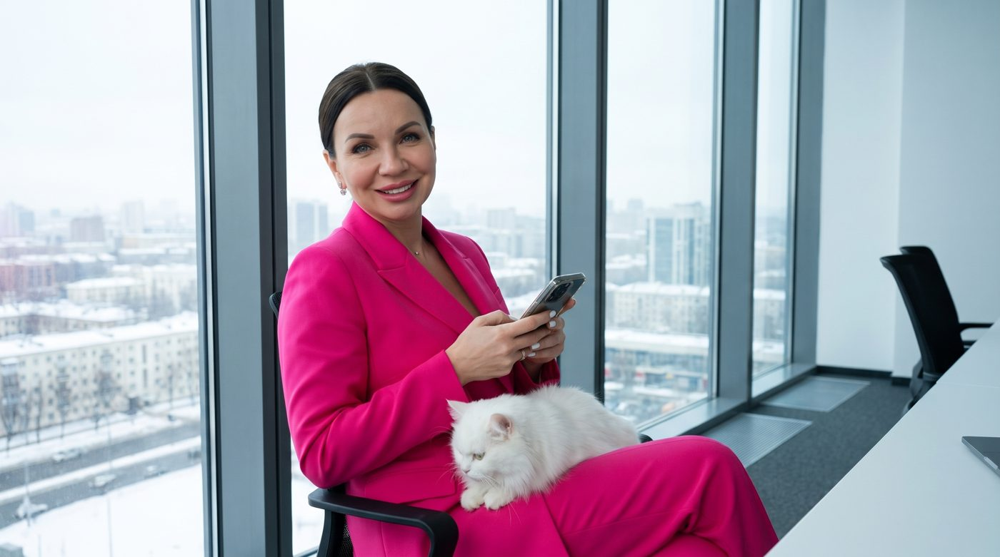
Настя в светлом кабинете, в розовом, с тем же котом, смотрит в камеру и улыбается.
Настя: «Уважение теперь в одну кнопку». Логотип «Человеки» и подпись «Персонал на ивент быстро и просто».
♪ Финальная музыка до конца, под логотип